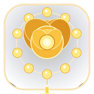

환희의 신비 제1단
"마리아께서 예수님을 잉태하심을 묵상합시다."
열매: 겸손의 은혜성호경
십자가를 잡고 성호를 그으며 기도를 시작합니다.
10월 14일 수요일
"성모님과 함께 바치는 거룩한 장미 화관"
각 단의 영광송 뒤에 구원을 비는 기도를 함께 바칩니다.
성모님과 함께 바친 묵주기도의 은총이
언제나 삶 가운데 가득하시기를 기도드립니다.
"평화를 빕니다."

스마트폰 바탕화면 바로가기
터치 후 나타나는 시스템 팝업에서 [추가]를 선택하세요.